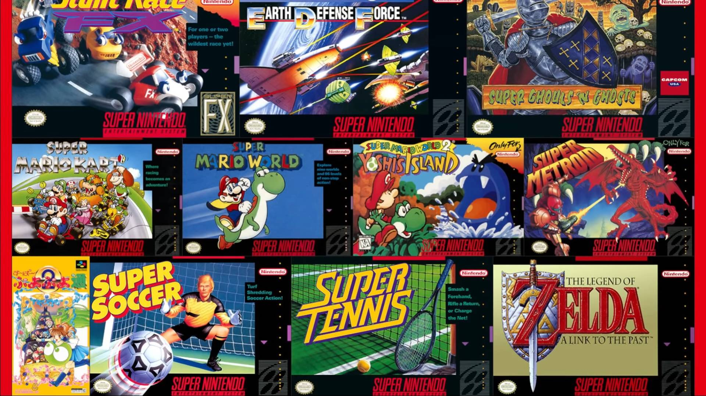
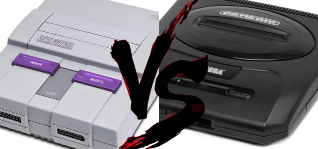

History
To compete with the popular Family Computer in Japan, NEC Home Electronics launched the PC Engine in 1987, and Sega followed suit with the Mega Drive in 1988. The two platforms were later launched in North America in 1989 as the TurboGrafx-16 and the Sega Genesis respectively. Both systems were built on 16-bit architectures and offered improved graphics and sound over the 8-bit NES. However, it took several years for Sega's system to become successful. Nintendo executives were in no rush to design a new system, but they reconsidered when they began to see their dominance in the market slipping.
Most Popular Games
1. Super Mario World
2. Super Mario All-Stars
3. Donkey Kong Country
4. Super Mario Kart
5. Street Fighter II: The World Warrior
6. Donkey Kong Country 2: Diddy's Kong Quest
7. The Legend of Zelda: A Link to the Past
8. Super Mario World 2: Yoshi's Island
9. Street Fighter II Turbo: Hyper Fighting
10. Donkey Kong Country 3: Dixie Kong's Double Trouble!

The Console Wars
The rivalry between Nintendo and Sega resulted in what has been described as one of the most notable console wars in video game history, in which Sega positioned the Genesis as the "cool" console, with games aimed at older audiences, and aggressive advertisements that occasionally attacked the competition. Nintendo, however, scored an early public-relations advantage by securing the first console conversion of Capcom's arcade hit Street Fighter II for SNES, which took more than a year to make the transition to the Genesis. Though the Genesis had a two-year lead to launch time, a much larger library of games, and a lower price point, it only represented an estimated 60% of the American 16-bit console market in June 1992, and neither console could maintain a definitive lead for several years. Donkey Kong Country is said to have helped establish the SNES's market prominence in the latter years of the 16-bit generation, and for a time, maintain against the PlayStation and Saturn. According to Nintendo, the company had sold more than 20 million SNES units in the U.S. According to a 2014 Wedbush Securities report based on NPD sales data, the SNES outsold the Genesis in the U.S. market.
Info from:
https://en.wikipedia.org/wiki/Super_Nintendo_Entertainment_System